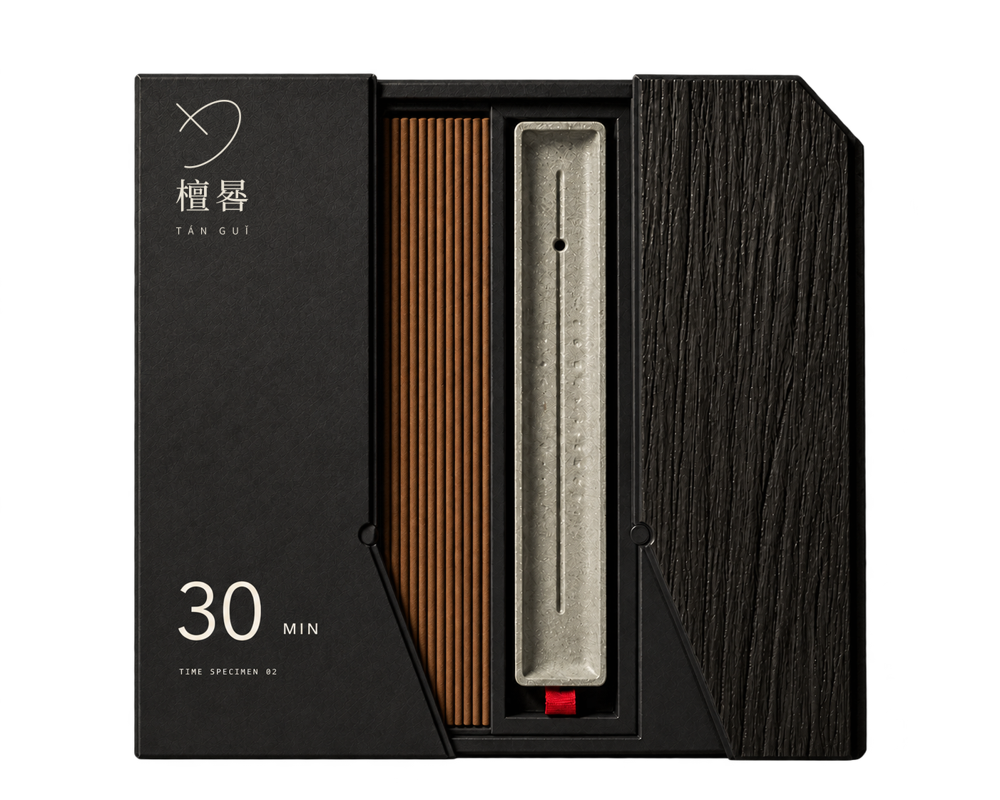

TIME DIAL · MORNING IVORY
晨白 · 15 MIN
以一支细长线香对应一段短时仪式，服务起床、更衣、沏茶与开始工作前的转换时刻。
檀晷 / 香事与时间

以一炷香，记一段时间。
让时间，有可感知的形状。
晷墨 · 30 MIN
香盒、香支与香托
向下探索TÁN GUǏ / DESIGN ARCHIVE
“晷”是日影留下的刻度。
檀晷把线香的长度转译成三种时间标本，
让香气成为日常节奏的一部分。
设计选择 把香长与 15、30、45 分钟三档概念时长对应；以纸面颜色区分时段，用木纹侧板与日影折线连接识别、触感和开合。
一套完整的时间器物九项产品 · 六种品类
01 / TIME SPECIMENS
晨白、晷墨、檀褐。
以象牙白、墨黑和深褐，辨认不同的日常时段。
以一支细长线香对应一段短时仪式，服务起床、更衣、沏茶与开始工作前的转换时刻。
对应一次完整阅读、静坐或专注工作的中等时段，让线香长度与日常节奏建立稳定联系。
提供较长的连续燃香时段，用于晚间阅读、会客或一席不被打断的香事。
15 / 30 / 45 MIN 为原项目的概念目标时长。
展开晷墨的香事画册02 / GIFT & TRAVEL
礼盒把香与香托安放在同一处；
随行容器，将短时香事收进修长的轮廓。
在一个盒体中明确区分香与香托的位置，让用户开盒后即可完成从取香、安置到计时的完整流程。
以窄长容器收纳短规格线香；多边截面降低滚动，木质上盖承担开合和系列识别。
03 / OBJECTS OF TIME
圆周、方盒与三角。
把同一套时间语言，延伸到盘香、香器与计时工具。
圆形低盒收纳完整盘香，并配套圆形承灰香托；适合需要稳定摆放与较长燃烧路径的使用方式。
围绕不同香形配置条形托、圆形盘香托与安全熄香小件，统一承灰、隔热和稳定摆放的功能。
通过机械旋钮设定时间，黑色圆盘读取刻度，赭红扇区提示剩余时长；三角木质底座提供稳定摆放。
04 / MATERIAL ARCHIVE
以册页收纳原料卡、批次卡与香型说明。
让木纹成为可阅读、可更新的材料档案。
象牙白的纸面与深色木脊，
延续线香包装中的日影折线。
木质档案册 / WOOD ARCHIVE
BRAND LANGUAGE
从日晷的形态出发，以克制的线与留白
连接香品、包装和桌面的器物。
05 / VISUAL CAMPAIGN
晨光与静香，日常里的两段时间。
以纸、木、器物与一缕细烟，写下香事的片刻。
檀晷 / 香事与时间
从日影刻度到香的长度，从纸木包装到桌上器物。檀晷以同一套时间语言，让每一段日常都有可感知的形状。
檀晷 · 以香记时